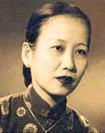

Chương 1 (Tt)

à tôi bị suyễn vì vậy mỗi lần cha tôi về đều có mang theo thuốc xông hạ cơn, trà tàu cho ông tôi và dầu bạc hà hiệu Khuất Thần cho bà tôi nữa. Ngoài ra còn có những thứ như lạp xưởng, giò lụa hay khô bò, thịt chà bông mà mẹ tôi đã thức cả đêm trước để làm bỏ vào các hũ, lọ.

Tôi còn nhớ có lần cha tôi không tìm ra loại thuốc suyễn dùng để xông cho hạ cơn nên khi về thiếu món này thì bà tôi giận bắt cha tôi nằm xuống đánh mấy roi. Ôi! Giáo dục gia đình thật nghiêm khắc. Bà tôi là người sâu sắc, ban ngày ban mặt mẹ tôi có làm gì lầm lỗi, không vừa ý bà thì bà chẳng bao giờ rầy la ngay, chờ lúc đêm khuya thiên hạ hàng xóm đều an giấc, kẻ ăn người ở trong nhà đều ngủ yên,lúc ấy mới kêu mẹ tôi dậy, bảo cha tôi cũng đứng một bên mẹ tôi để nghe bà tôi dạy bảo bổn phận làm dâu, làm vợ.
Bà tôi có tánh sạch sẽ đến ai cũng phải nể. Nền nhà bằng đất, đâu phải nền gạch hay nền xi măng, mà mỗi khi đặt chân xuống nghe có cát đất là bà tôi bắt chú Đài của tôi phải quét lại nhà. Bà tuy rất thương tôi nhưng không hề bồng ẵm, chỉ vuốt tóc hay hôn nhẹ lên má tôi. Trên bờ ao ngoài vườn là một bụi tre lớn rậm rạp để che mắt cho người nhà khi ra lấy nước tưới cây hay rửa ráy đồ đạc, vậy mà mỗi ngày chú Đài hai ba lần phải vớt lá khô để nước ao được sạch sẽ, khỏi ủng hôi vì lá úa.
Sau này mẹ tôi cũng học được tánh sạch sẽ, ngăn nắp của bà tôi, và chị em chúng tôi cả thảy bảy người con gái cũng sạch sẽ, ngăn nắp, như manh trong người dòng máu di truyền của bà.
Cha tôi và tôi mỗi tuần, dầu mưa hay nắng, ấm áp hay giá lạnh đều làm một cuộc hành trình trên chuyến đò tre như thế, cho đến khi tôi lên năm tuổi. Có lẽ vì tình hình chánh trị lúc ấy trở lại lộn xộn nên bà tôi mới để cha tôi thay đổi chỗ làm. Nhân có một người bạn làm ở Sở Thương chánh Tam Quan (một huyện nhỏ ở Bình Định) muốn về Đà Nẵng, cha tôi đã bằng lòng xin hoán đổi. Đi xa như vậy theo tôi biết cũng là một sự bất đắc dĩ, vì cha tôi là con trai duy nhất, bà tôi lại đau ốm, từ Tam Quan ra Đà Nẵng xa lắm, đâu có thể mỗi tuần về viếng an bà tôi.
Thế là cha mẹ tôi đưa tôi và em gái tôi vào Tam Quan, và cuộc đời thơ ấu của tôi bước vào giai đoạn khác. Những chuyện tôi viết trên đây về những lần đi thả diều ở bãi biển là ở thời điểm này. Thời kỳ sống ở Tam Quan là thời kỳ êm đẹp nhất của tuổi thơ tôi. Ở đây tôi bắt đầu học đọc học viết, giúp cha trồng hồng và săn sóc đủ loại hồng mà cha tôi đã kiếm giống về.
Tôi đã nói nhiều về cuộc sống ở Tam Quan, nhưng viết mấy tôi cũng cảm thấy chưa đã chút nào. Vì chính nơi này, những năm tháng sống ở nơi này, tôi thấy tôi ở gần với thiên nhiên và cảm nhận một cách tự nhiên cái đẹp của sông núi của cát đất, của cây cỏ, của tình người mộc mạc, của những kẻ suốt đời chỉ biết làm việc và làm việc... Là tất cả những gỉ tôi cảm nhận lúc ấy. Tôi cũng chưa hiểu rõ tình yêu quê hương. Sau này lớn lên tôi mới biết quê hương của mình thật đáng yêu và không đâu đẹp bằng quê hương của chúng ta cả.
Từ thuở nhỏ, tôi đã sống với sách báo, thơ văn, vì cha tôi lúc ấy một công chức Sở Thương chánh bất đắc dĩ, nên ngoài những giờ làm việc ở sở ra, cha tôi đọc báo, đọc sách, và viết những bài báo gởi ra Bắc cho báo Nam Phong của Phạm Quỳnh hay Hữu Thanh của Tản Đà. Cha tôi mua thật nhiều sách báo lúc bấy giờ, để đầy các tủ, và mẹ tôi lãnh phần chăm sóc đống sách báo ấy không cho mối mọt gặm nhấm. Cứ mỗi tháng một lần, mẹ tôi chọn ngày nắng ráo đem ra phơi, và cái phần trông chừng sách, lại là phần chủ tôi. Với những ngày phơi sách, tôi cứ cắm đầu đọc các tờ báo, các quyển sách, và có khi say mê đến nỗi ngồi ngoài năng mà không hay biết.
Cha tôi rất nghiêm như không nóng nảy. Mẹ tôi rất nóng tánh, khi giận lên là gặp roi quất roi, gặp cán quạt là khẻ, nhưng tôi không hề một lần nào bị đánh hay bị khẻ. Có lần tôi ra sân mải mê cất những ngôi nhà bằng cát, quên cả giờ đi tắm, bị mẹ tôi đập mấy cái là cha tôi không bằng lòng, bảo “Đừng đánh nó!”. Từ ấy tôi không bao giờ bị đánh.
Một dịp phơi sách là một dịp đọc say mê, đọc mà đôi khi chưa biết những trang sách quá khó đối với cái tuổi quá nhỏ của tôi, nhưng tôi vẫn đọc. Vì vậy tôi rất thích văn chương. Chiều chiều sau giờ ở sở về, cha tôi dắt tôi cùng người cậu em của mẹ tôi, lớn hơn tôi vài tuổi, đi dạo trước hàng dừa, vừa đi cha tôi vừa kể cho tôi và cậu tôi nghe những bài ngụ ngôn của Fontaine, những bài trong tập Nhị thập tứ hiếu, hay đọc những lời giáo huấn của Nguyễn Trãi...
Tuổi thơ bình thản, ngày tháng trôi qua êm đềm như vậy, đã gây trong đầu óc tôi nhiều cảm nghĩ về thơ văn, về sách vở. Thấy mỗi tối cha tôi viết bên ngọn đèn manchon, tôi rất muốn viết như cha tôi lúc bấy giờ, và có lẽ mầm văn chương đã nảy nở trong đầu óc tôi lúc ấy.
Sáu, bảy tuổi, tôi đã quen với những bộ tiểu thuyết Tàu, mà mỗi lần mẹ tôi bận may, bảo tôi đọc mẹ nghe những trang Mạnh Lệ Quan. Thế là ông nội tôi đề nghị phải dạy tôi học chữ nho, không cho tôi được tự do ngao du sơn thủy theo kiểu của tôi, đi bắt bướm, gài bẫy những con ong mun, hay chạy đua với lũ trẻ trên con đường trước nhà, rợp mát bởi những hàng dừa xanh tươi. Con gái gì mà đi chơi ngoài nắng suốt ngày, đen như chà và. Tôi bắt đầu học Tam Tự Kinh từ đó. Tập viết chữ với cây bút lông. Nét nào phải viết trước, nét nào phải viết sau tôi không cần để tâm, tôi viết như vẽ, muốn vẽ sao cho có chữ thì thôi, thì bị ông tôi rầy la, ghép vào khuôn khổ. Tôi chỉ học được vài năm, ngày dăm ba chữ. Trong khi đó tôi còn phải chỉ cho ông tôi đã gần 80 tuổi học chữ Việt. Và chiều nào cũng vậy, ông tôi dẫn tôi và chú Huấn,cậu Sắc tôi ra bãi biển. Trong khi chú và cậu tôi tắm biển, đá banh, thì tôi lại đọc Mạnh Lệ Quân (Tái Sinh Duyên) hay chuyện Chiêu Quân Cống Hồ cho ông nôi tôi nghe. Ông tôi già nhưng đầu óc rất trẻ trung, thích sống hợp trào lưu, và ông tôi vốn là người ở Nghệ An vào Quảng buôn bán, gặp bà nội tôi rồi lập nghiệp luôn ở đấy. Tôi thấy ông tôi ngồi tập viết chữ quốc ngữ mà không khỏi khâm phục.
Hai năm sau tôi phải ra Đà Nẵng học và không còn học chữ nho với ông tôi nữa.
Tôi sở dĩ nói dông dài như thế để các bạn thấy tôi đã nuôi mộng viết văn từ khi còn quá nhỏ, chưa có một khái niệm gì về tình ình đất nước cũng không hiểu tại sao cha tôi, một người Việt Nam lại phải làm việt dưới quyền một người Pháp. Và trên đất nước mình lại có những người Pháp ăn trên ngồi trước, coi dân Việt Nam như cỏ rác.
Khi còn nhỏ, tôi thường được bà con và những người quen nhận xét là tôi rất lì, không hề sợ những lời nhát ma hay đe dọa. Đêm tối ở thôn quê, cha mẹ sai đem quà cho một nhà xa ở trong xóm, tôi vẫn đi. Tôi còn nhớ có lần lúc ấy tôi mới lên sáu, bảy tuổi gì đó, cha mẹ tôi bưng một thố chè qua nhà chú Phán làm cùng sở với cha tôi (ở Tam Quan), hai bên đường là những hành dừa cao vút và phía trước là dòng sông chảy lững lờ. Tôi vừa ra khỏi cổng, cách nhà độ 15 thước, bỗng một bóng người to lớn từ đâu chạy xô đến cười hăng hắc và ồ ề nói: “Con nhỏ kia, đi đâu đó, bưng cái gì ngon vậy, đưa cho tao ăn mau!” Tự nhiên một linh tính báo cho tôi biết người này không phải là ma, cũng chẳng phải kẻ gian, kẻ cướp, mà là một người hàng xóm có tánh hay đùa giỡn, phá phách nổi tiếng ở đây, tên là Thiện. Tôi đứng ngay lại và nói: “Chú thiện đừng hòng dọa nạt tôi. Chú mà ù tôi, tôi liệng thố chè này vào người chú liền bây giờ!”. Chú Thiện nghe vậy cười lớn: “Con nhỏ này gan thật, tao chịu thua đó”. Khi đi về, tôi liền kể cho cha mẹ tôi nghe. Cha tôi nói “Giỏi đó!”, rồi kêu chú Huấn tôi lên và nói: “Em thấy đó, con Vân có sợ ma như em đâu”.
Trước đó, hễ trời tối là chú Huấn tôi, lớn hơn tôi độ năm tuổi, không bao giờ dám ra ngõ hay đi quanh nhà. Chú sợ ma ghê lắm. Có lần cha tôi sai chú ra ngoài cổng coi ai gọi ngoài đó, chú không dám đi, phải nhờ tôi. Buổi tối chú thường rút dưới nhà bếp với vú Lạc, không dám ngồi ở cái chòi phía nhà sau mà học, vì cái vòi này xây mặt ra biển, mà trên bãi biển có bãi tha ma. Để trị tật sợ ma của chú, cha tôi hay trói chú ngoài cổng, chú khóc lóc van xin mấy cha tôi cũng không tha. Nhưng rồi cái tánh sợ mà của chú vẫn không chừa được. Tôi thì lại thích những đêm trăng ra ngoài đường ngồi dưới gốc cây dừa nhìn trăng và nhìn ra sông xem các con thuyền đi đánh cá...
Ôi! Viết sao hết những kỷ niệm của những năm tháng ở Tham Quan, ở làng Thiện Xuân, một vùng đất dưới sông, có biển, cồn cát, hàng dừa. Tam Quan là xứ dừa mà. Công đâu công uổng công thừa, công đâu gánh nước tưới dừa Tham Quan. Mà thời kỳ này tôi đã bắt đầu học, đọc sách và cái tính ham thích văn chương cũng khởi động trong tôi lúc ấy. Cha tôi là một người ham học, mê đọc sách nên không có sách nào vừa xuất bản mà cha tôi không mua. Cha tôi mua cả các loại ngoài Bắc, trong Nam, báo Nam Phong của Phạm Quỳnh, báo Hữu Thanh của Tản Đà, các báo hằng ngày như Trung Bắc Tân Văn, Lục Tỉnh Tân Văn... Cha tôi cắt những bộ tiểu thuyết đăng mỗi ngày (feuilleton) trên các báo, đóng thành sách như các bộ Tài Sanh Duyên tức Mạnh Lệ Quân và Phi Giao hoàng hậu, Chiêu Quân Cống Hồ, Bình Sơn Lãnh Yến do Đỗ Mục dịch từ các tiểu thuyết Tàu. Những chuyện này đã in sâu vào đầu óc trẻ thơ của tôi, đề cao vai trò của người phụ nữ ở xã hội, lòng trung hiếu của người dân trong một nước và nhất là chuyện Bình Sơn Lãnh Yến với các nhân vật Bình Như Hành, Sơn Đại, Lãnh Giáng Tuyết và Yến Bạch Hạm với tài nhả ngọc phun châu khiến tôi thấy cái thú làm thơ viết văn là con đường chắc sau này tôi phải chọn. Bao nhiêu hoài bão để trở thành nhà văn đã nảy sanh ra từ lúc đó. Lại thêm những ngày thơ ấu sống với thiên nhiên, đã có tôi một tâm hồn thật bình thản, thật tự tin và cũng thật muốn phục vụ, phụng sự cho một cái gì đó cao đẹp mà tuổi còn nhỏ cũng chưa hiểu rõ lắm đó là cái gì, từ trong bụng mẹ đã mang giòng máu yêu nước của cha, sự đấu tranh để khỏi làm người dân nô lệ, ra đời trong tình yêu thương cha mẹ, ông bà, được dạy dỗ đầy đủ và ngay từ lúc tập tành đi hay bập bẹ nói đã học được những kiến thức mà một đứa bé khác dù sống trong giàu sang phú quí ở thành thị cũng không bao giờ có được. Khi ngồi trên chiếc ghe đi trên sông để về thăm ông bà nội, cha con cùng ngắm trời sao, sông nước. Cha tôi chỉ có tôi sao Bắc Đẩu, sao Nam Tào, rồi sao Thần Nông, sao Hôm, sao Mai, giải Ngân Hà, và kể nào chuyện Chức Nữ Ngưu Lang, kẻ đầu sông Thương người cuối sông. Gặp những đêm sáng trăng thì kể chuyện chú Cuội ngồi gốc cây đa, chị Hằng trên Nguyệt Điện.
Chính những chuyến đi này và nhiều chuyến đi khác mà tôi đâm ra thích đi du lịch.
Ngày nào cha tôi cũng dạy tôi học, biết đọc, biết viết, biết cả bốn phép toán nhưng mới năm tuổi thì làm sao vô lớp năm (tức lớp 1) bây giờ. Hồi đó chưa có những lớp mẫu giáo, học sinh ở phần đông tuổi nhỏ học chữ Hán, không học ở các trường tiểu học nên vô học chữ quốc ngữ rất trễ. Mãi đến năm tôi lên sáu mới vào trường tiểu học, mà là học chung với bọn con trai. Thấy tôi nhỏ, học giỏi lại được thầy cưng, các học trò trai thường tìm cách ăn hiếp, khi thì ăn cắp bình mực khi giấu quyển tập, khi ra về thì bắt nạt đủ điều. Lúc đầu tôi còn nhịn vì giáo dục gia đình không cho phép tôi hung dữ, cãi cọ, gây gỗ với bạn bè, nhưng lần lần không chịu được sự ăn hiếp, tôi phản đối kịch liệt, không sợ ai, hễ gặp cái gì tôi liệng cái ấy, có lần tôi liệng cả bình mực vào đầu một nam học sinh có tiếng là rắn mắt, khiến cả bọ thấy làm ngạc nhiên. Nhưng tôi vừa liệng bình mực vừa hô hoán để thầy nghe vào can thiệp vì là giờ ra chơi. Những đứa học trò ngày thường ăn hiếp tôi, tưởng tôi hiền, nay thấy tôi chống cự lại thì không khỏi nể nang, sửng sốt. Chúng còn nể nang vì học thua tôi. Những bài toán chúng làm không ra phải cầu cứu đến tôi, những bài luận văn cũng nhờ tôi viết.
Từ khi biết chạy cho đến lớn rồi ra đời, tôi chưa hề bị một lần cha mẹ đánh đập, cha tôi rất yêu thương tôi, đến nỗi mẹ tôi cũng phải nể tôi mà không nỡ đánh.
- Nó là con cưng của cha mày.
Mẹ tôi thường nói với em tôi nhưng thế. Và các em tôi, tám đứa đều sợ tôi và răm ráp nghe theo lời tôi.
Cho đến những người giúp việc khi họ lầm lỗi gì, đều cầu cứu đến tôi để khỏi bị quở phạt.
Cha tôi thích ăn cơm nhão, mẹ tôi lại thích cơm khô. Nấu cơm để vừa ý cả nhà tôi, chị bếp phải có một nghệ thuật riêng trong khi cơm vừa cạn. Nhưng rủi lần nào cơm bị khô, cha tôi tỏ vẻ không bằng lòng là tôi nói liền: “Thưa cha, tại con coi chừng nồi cơm cho chị bếp, vì con nhờ chị đi mua cho một trái dừa”
Chị bếp đã năn nỉ tôi phải nói như thế và cha tôi không còn bực mình nữa.
Chuyện cơm khô, cơm nhão là chuyện nhỏ, còn chuyện quan trọng hơn tôi cũng đứng ra gánh để những người giúp việc trong nhà khỏi bị rầy.
Có lần cha tôi lên phố mua cây đèn manchon, lúc ấy nhà ai có cây đèn manchon kể như là sang lắm. Cha tôi rất tự hào khi mỗi đêm thắp cây đèn sáng tỏa khắp cả phòng. Rồi cha tôi đọc sách đọc báo, mẹ tôi vá may bênh cạnh, tôi làm bài nơi bàn, các em tôi chơi bên thềm nhà, gia đình êm ấm, vui vẻ.
Có đêm mẹ tôi ngủ sớm với các em tôi, cha tôi đem đèn ra sân để dưới giàn thiên lý rồi ngồi gảy đàn. Cha tôi có cây đàn nguyệt, đàn những bài Hành vân, Tứ đại cảnh, còn tôi thì ngồi làm bài gần đó.
Tiếng sóng xa xa vang lại phía sau nhà, tiếng nước sông vỗ vào bờ phía trước hòa cùng tiếng đàn khoan nhặt của cha tôi giữa đem khuya, thật dễ xoa diệu những tâm hồn mệt mỏi.
Cha tôi quý cây đèn lắm. Khi vô dầu cũng như khi lên đèn, cha tôi đều tự làm không sai ai, dù trong nhà lúc đó cũng có hai người chú họ của tôi được cha tôi đưa từ Quảng Nam vào để học. Một trong hai chú tôi hôm quét bù hóng gián nhện ở trần nhà vô ý thế nào mà làm bể cái chụp đèn. Chú tôi hốt hoảng khóc lóc với mẹ tôi. Mẹ tôi cũng không biết làm sao. Từ nhà tôi lên phố phải qua một con đò ngang rồi còn đi đến năm cây số nữa mới tới, làm sao mua kịp mà chú tôi cũng không quen chuyện này. Tôi vừa đi chơi ngoài bãi biển về với mấy đứa bạn hàng xóm thì chú tôi chạy ra kể lể và năn nỉ:
- Cháu nhận giùm chú là cháu làm bể.
Cha tôi rất ghét ai nói láo, nên tôi hơi do dự.
Nhưng mẹ tôi nói:
- Nói láo để giúp một người khỏi bị rầy la quở trách thì không có tội đâu con.
Thế là tôi ra đường đón cha tôi. Thấy cha tôi từ xa đi về, tay cầm mấy tờ báo là tôi phóng lên phía trước, đón cha. Cha tôi vui vẻ đứng lại chờ tôi rồi câm tay tôi dắt về nhà.
- Lại chuyện gì thế? - Cha tôi hỏi khi thấy tôi có vẻ lo sợ.
Tôi ngập ngừng:
- Cha đừng rầy con thì con mới dám nói.
- Thì chuyện gì thế? Nói thật cha không rầy đâu.
Tôi nói một mạch:
- Chú Hộ quét bù hóng gián nhện, con giành cây chổi quét và vô ý làm bể bóng đèn manchon rồi!
Cha tôi khựng lại nhìn tôi rồi nói:
- Con còn nhỏ như vậy tại sao chú Hộ để con làm?
- Tại con mà!
Cha tôi thở dài:
- Tối nay không có đèn sáng rồi! Ngày mai mới lên phố mua được.
Nói xong cha tôi lại nắm tay tôi hối hả về nhà vừa đi vừa nói:
-Một đêm với cây đèn dầu hỏa tù mù cũng chẳng sao. Mình quen ăn cơm từ khi trời chưa tối, cũng không cần đèn.
Tình thương của cha tôi như vậy đó, làm sao mỗi khi nhắc đến cha, tôi không cảm thấy một cái gì xao xuyến trong tim, mặc dù hôm nay tôi đã ngoài 80 tuổi.